Don't Forget these Specialities.
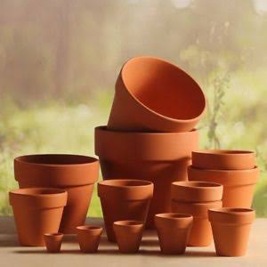
Handmade clay pots used primarily for naturally cooling drinking water, along with small clay cups used by local tea vendors.
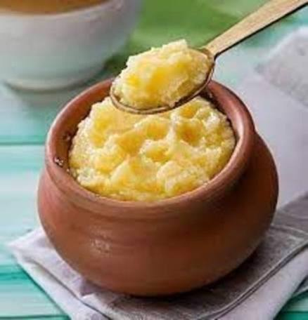
Pure ghee made using the traditional method of setting curd in earthen pots and churning it by hand with a wooden mathani.
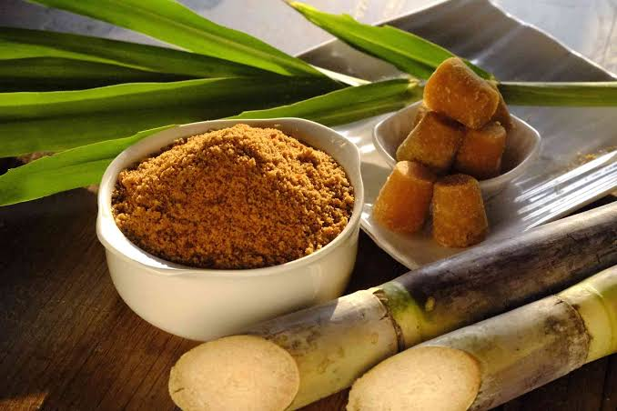
Unrefined cane sugar made by crushing sugarcane in a local kohlu (crusher) and boiling the juice in massive iron vats over open fires.
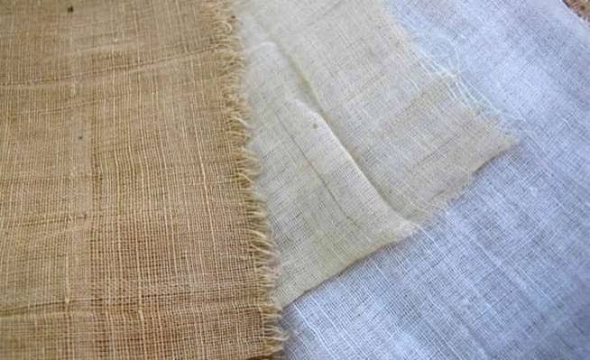
Fabric spun on a charkha (spinning wheel) and woven on handlooms, remaining a staple of rural textile production.
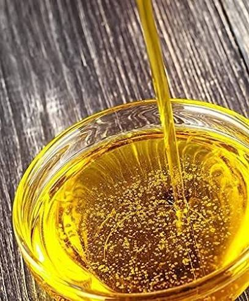
Mustard, peanut, or sesame oil extracted using a traditional wooden bullock-driven press, which retains the oil's natural nutrients and pungent aroma.
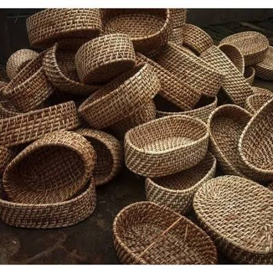
Handwoven storage bins, winnowing fans (soop), and carrying baskets made from locally sourced bamboo or cane.
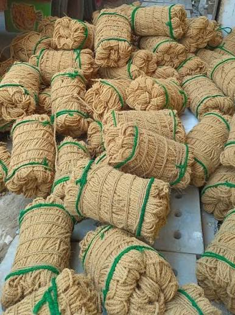
Extremely durable ropes, mats, and gunny sacks woven from natural plant fibers, traditionally used for agriculture and tying livestock.
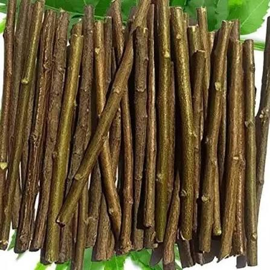
Fresh twigs from the Neem tree, chewed at the ends to form bristles, serving as an indigenous, antibacterial toothbrush.
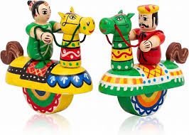
Carved and brightly painted wooden toys, often colored with natural vegetable dyes (similar to the famous Channapatna or Kondapalli styles).
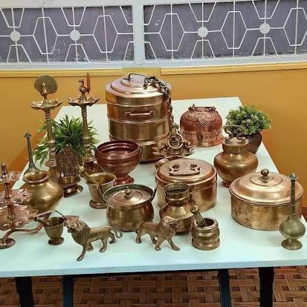
Heavy, hand-beaten metal pots and plates crafted by village metalworkers (tatheras), traditionally believed to impart health benefits when used for cooking and storing water.
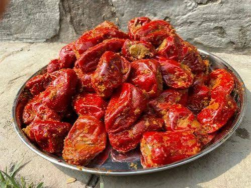
Raw mango, lime, or mixed vegetables preserved in mustard oil and indigenous spices, dried on rooftops under the village sun.
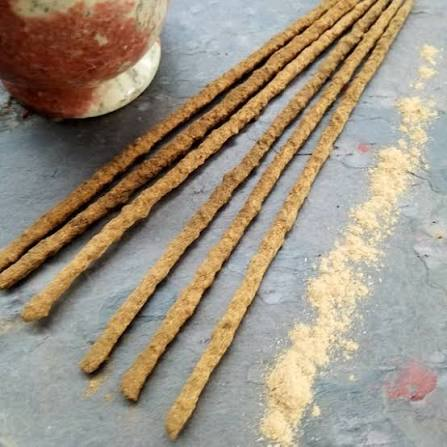
Aromatic sticks and cones made by hand, often by rural women's cooperatives, using natural resins, cow dung, and dried flower petals.
इन विशेषताओं को न भूलें।
हाथ से बने मिट्टी के बर्तन जिनका उपयोग मुख्य रूप से पीने के पानी को प्राकृतिक रूप से ठंडा करने के लिए किया जाता है, साथ ही स्थानीय चाय विक्रेताओं द्वारा उपयोग किए जाने वाले छोटे मिट्टी के कप।
शुद्ध घी को मिट्टी के बर्तनों में दही जमाकर और लकड़ी के मथनी से हाथ से मथकर पारंपरिक विधि से बनाया जाता है।
गन्ने को स्थानीय कोहलू (कुचलने वाली मशीन) में कुचलकर और उसके रस को खुले में आग पर रखे बड़े-बड़े लोहे के बर्तनों में उबालकर अपरिष्कृत गन्ने की चीनी बनाई जाती है।
चरखे पर काता और हथकरघे पर बुना हुआ कपड़ा, ग्रामीण वस्त्र उत्पादन का एक मुख्य आधार बना हुआ है।
सरसों, मूंगफली या तिल का तेल पारंपरिक लकड़ी के बैल-चालित प्रेस का उपयोग करके निकाला जाता है, जो तेल के प्राकृतिक पोषक तत्वों और तीखी सुगंध को बरकरार रखता है।
स्थानीय स्तर पर उपलब्ध बांस या बेंत से बने हाथ से बुने हुए भंडारण डिब्बे, सूप फटकने वाले पंखे और सामान ढोने वाली टोकरियाँ।
प्राकृतिक पौधों के रेशों से बुनी गई अत्यंत टिकाऊ रस्सियाँ, चटाइयाँ और बोरी, जिनका पारंपरिक रूप से कृषि और पशुओं को बांधने के लिए उपयोग किया जाता है।
नीम के पेड़ की ताजी टहनियों को सिरों से चबाकर रेशे बनाए जाते हैं, जो एक देसी, जीवाणुरोधी टूथब्रश के रूप में काम करते हैं।
नक्काशीदार और चमकीले रंगों से रंगे लकड़ी के खिलौने, जिन्हें अक्सर प्राकृतिक वनस्पति रंगों से रंगा जाता है (प्रसिद्ध चन्नापटना या कोंडापल्ली शैलियों के समान)।
गांव के धातु कारीगरों (तथेरा) द्वारा हाथ से पीटकर बनाए गए भारी धातु के बर्तन और प्लेटें, परंपरागत रूप से खाना पकाने और पानी संग्रहित करने के लिए उपयोग किए जाने पर स्वास्थ्य लाभ प्रदान करने वाले माने जाते हैं।
कच्चे आम, नींबू या मिश्रित सब्जियों को सरसों के तेल और स्थानीय मसालों में संरक्षित करके, गांव की धूप में छतों पर सुखाया जाता है।
प्राकृतिक रेजिन, गाय के गोबर और सूखे फूलों की पंखुड़ियों का उपयोग करके ग्रामीण महिला सहकारी समितियों द्वारा हाथ से बनाई गई सुगंधित स्टिक और कोन।